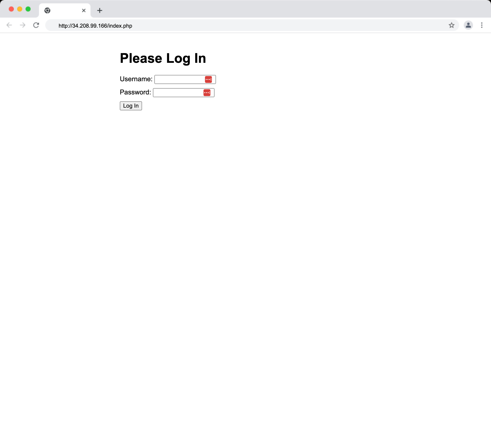

Traditional Perimeter-Based Security
Lab 3: Creating a Traditionally-Secured System
Introduction
Welcome to the lab of our Zero Trust course! In this lab, we'll set up a basic, traditionally-secured system in AWS using AWS CLI commands and Python (boto3). This hands-on approach will help you understand each component of the system and why better security practices are necessary.
Try the simulation here NetworkSecurityDemo ID: admin, PW: password123
Objectives
By the end of this lab, you will: 1. Create a Virtual Private Cloud (VPC) with a public and private subnets 2. Set up an Internet Gateway and configure routing 3. Setup a NAT Gateway 3. Create a security group with restricted access 4. Setup Secrets Manager 5. Deploy a "sensitive" backend server 6. Launch a public-facing web server 7. (not implemented) CloudTrail (API log) and CloudWatch (Metric and Event Monitoring) for ovservability
Setup
First, let's set up our AWS environment. Make sure you have configured your AWS CLI with the appropriate credentials.
# Import necessary AWS SDK and utility modules
import boto3
import json
import time
Set the AWS region
Configure the AWS region to create the network and servers
# Set the AWS region for resource creation (change as needed)
region = 'us-west-2'
Initialize AWS clients
Setup the necessary environment variables
# Initialize EC2 client and resource objects for interacting with AWS
ec2_client = boto3.client('ec2', region_name=region)
ec2_resource = boto3.resource('ec2', region_name=region)
secretsmanager = boto3.client('secretsmanager', region_name=region)
iam = boto3.client('iam', region_name=region)
print(f"AWS environment initialized in region: {region}")
Initialize Value Store
Initialize long-term storage
class ValueStore:
_instance = None
def __new__(cls):
if cls._instance is None:
cls._instance = super(ValueStore, cls).__new__(cls)
cls._instance.store = {}
return cls._instance
def set(self, key, value):
self.store[key] = value
def get(self, key, default=None):
return self.store.get(key, default)
def print_all(self):
for key, value in self.store.items():
print(f"{key}: {value}")
# Create a global instance
value_store = ValueStore()
# Test the ValueStore
value_store.set('test_key', 'test_value')
print(value_store.get('test_key')) # Should print: test_value
Step 1: Create a VPC and Subnet
Let's start by creating our Virtual Private Cloud (VPC) and a public subnet.
# Create VPC
vpc_response = ec2_client.create_vpc(CidrBlock='10.0.0.0/16')
vpc_id = vpc_response['Vpc']['VpcId']
ec2_client.create_tags(Resources=[vpc_id], Tags=[{'Key': 'Name', 'Value': 'TraditionalSecuredVPC'}])
value_store.set('vpc_id', vpc_id)
print(f"VPC created with ID: {vpc_id}")
Access the VPC - VPC Menu in AWS Management Console.
It should look like below:
# Get available Availability Zones
available_azs = ec2_client.describe_availability_zones()['AvailabilityZones']
az = available_azs[0]['ZoneName'] # Choose the first available AZ
# Create Public subnet
public_subnet_response = ec2_client.create_subnet(
VpcId=value_store.get('vpc_id'),
CidrBlock='10.0.1.0/24',
AvailabilityZone=az,
TagSpecifications=[
{
'ResourceType': 'subnet',
'Tags': [
{
'Key': 'Name',
'Value': 'PublicSubnet'
}
]
}
]
)
public_subnet_id = public_subnet_response['Subnet']['SubnetId']
print(f"Public subnet created with ID: {public_subnet_id} in Availability Zone: {az}")
# Enable auto-assign public IP for the public subnet
ec2_client.modify_subnet_attribute(
SubnetId=public_subnet_id,
MapPublicIpOnLaunch={'Value': True}
)
print("Auto-assign public IP enabled for the public subnet")
# First, let's find the public subnet ID
public_subnets = ec2_client.describe_subnets(
Filters=[
{'Name': 'vpc-id', 'Values': [vpc_id]},
{'Name': 'tag:Name', 'Values': ['PublicSubnet']}
]
)['Subnets']
if not public_subnets:
raise ValueError("No public subnet found. Please ensure you've created a public subnet with the tag 'Name: PublicSubnet'")
public_subnet_id = public_subnets[0]['SubnetId']
public_subnet_az = public_subnets[0]['AvailabilityZone']
print(f"Found public subnet with ID: {public_subnet_id} in Availability Zone: {public_subnet_az}")
# Now create the Private subnet in the same Availability Zone
private_subnet_response = ec2_client.create_subnet(
VpcId=value_store.get('vpc_id'),
CidrBlock='10.0.2.0/24', # Different CIDR block for the private subnet
AvailabilityZone=public_subnet_az,
TagSpecifications=[
{
'ResourceType': 'subnet',
'Tags': [
{
'Key': 'Name',
'Value': 'PrivateSubnet'
}
]
}
]
)
private_subnet_id = private_subnet_response['Subnet']['SubnetId']
print(f"Private subnet created with ID: {private_subnet_id} in the same AZ as the public subnet: {public_subnet_az}")
# Modify the private subnet to disable auto-assign public IP
ec2_client.modify_subnet_attribute(SubnetId=private_subnet_id, MapPublicIpOnLaunch={'Value': False})
print("Auto-assign public IP disabled for the private subnet")
Access the VPC - Subnets Menu in AWS Management Console.
It should look like below:
Public Subnet

Private Subnet
Step 2: Set up Internet Gateway
Now, let's create an Internet Gateway.
# Create Internet Gateway
igw_name = "TraditionalSecuredIGW"
igw_response = ec2_client.create_internet_gateway(
TagSpecifications=[
{
'ResourceType': 'internet-gateway',
'Tags': [
{
'Key': 'Name',
'Value': igw_name
}
]
}
]
)
igw_id = igw_response['InternetGateway']['InternetGatewayId']
ec2_client.attach_internet_gateway(InternetGatewayId=igw_id, VpcId=value_store.get('vpc_id'))
print(f"Internet Gateway '{igw_name}' created and attached with ID: {igw_id}")
Access the VPC - Internet Gateways Menu in AWS Management Console.
It should look like below:
Step 3: Set up NAT Gateway
Next, let's create a NAT Gateway (Network Address Translation) to give instances in private subnet access to the Internet.
# Setup NAT Gateway
# Note: This will take a few minutes
def setup_nat_gateway(vpc_id, public_subnet_id, nat_gateway_name="TraditionalSecuredNATGW"):
# Create Elastic IP
eip = ec2_client.allocate_address(Domain='vpc')
# Create NAT Gateway with a name tag
nat_gateway = ec2_client.create_nat_gateway(
SubnetId=public_subnet_id,
AllocationId=eip['AllocationId'],
TagSpecifications=[
{
'ResourceType': 'natgateway',
'Tags': [
{
'Key': 'Name',
'Value': nat_gateway_name
}
]
}
]
)
# Wait for the NAT Gateway to be available
waiter = ec2_client.get_waiter('nat_gateway_available')
waiter.wait(
NatGatewayIds=[nat_gateway['NatGateway']['NatGatewayId']],
WaiterConfig={'Delay': 30, 'MaxAttempts': 10}
)
print(f"NAT Gateway '{nat_gateway_name}' created with ID: {nat_gateway['NatGateway']['NatGatewayId']}")
return nat_gateway['NatGateway']['NatGatewayId']
# Create the NAT Gateway
nat_gateway_id = setup_nat_gateway(value_store.get('vpc_id'), public_subnet_id)
print(f"NAT Gateway setup complete with ID: {nat_gateway_id}")
Access the VPC - NAT Gateways Menu in AWS Management Console.
It should look like below:

# Create and configure Public route table
rt_name = "TraditionalSecuredPublicRT"
rt_response = ec2_client.create_route_table(
VpcId=value_store.get('vpc_id'),
TagSpecifications=[
{
'ResourceType': 'route-table',
'Tags': [
{
'Key': 'Name',
'Value': rt_name
}
]
}
]
)
rt_id = rt_response['RouteTable']['RouteTableId']
# Create route to Internet Gateway
ec2_client.create_route(RouteTableId=rt_id, DestinationCidrBlock='0.0.0.0/0', GatewayId=igw_id)
# Associate route table with subnet
ec2_client.associate_route_table(RouteTableId=rt_id, SubnetId=public_subnet_id)
print(f"Route table '{rt_name}' created and configured with ID: {rt_id}")
Access the VPC - Public Route Tables Menu in AWS Management Console.
It should look like below:
# Create and configure Private route table
private_rt_name = "TraditionalSecuredPrivateRT"
private_rt_response = ec2_client.create_route_table(
VpcId=value_store.get('vpc_id'),
TagSpecifications=[
{
'ResourceType': 'route-table',
'Tags': [
{
'Key': 'Name',
'Value': private_rt_name
}
]
}
]
)
private_rt_id = private_rt_response['RouteTable']['RouteTableId']
# Create route to NAT Gateway
ec2_client.create_route(
RouteTableId=private_rt_id,
DestinationCidrBlock='0.0.0.0/0',
NatGatewayId=nat_gateway_id
)
# Associate route table with private subnet
ec2_client.associate_route_table(RouteTableId=private_rt_id, SubnetId=private_subnet_id)
print(f"Private route table '{private_rt_name}' created and configured with ID: {private_rt_id}")
# Optionally, you can describe the route table to verify its configuration
routes = ec2_client.describe_route_tables(RouteTableIds=[private_rt_id])
print(f"Routes in the private route table: {routes['RouteTables'][0]['Routes']}")
Access the VPC - Private Route Tables Menu in AWS Management Console.
It should look like below:
Step 4: Create an Traditional Secured Security Groups
Let's create a security group that allows for following: 1. FrontendSG: Allow traffic to port 80 from all locations 2. BackendSG: Allow traffic to pourt 80 from instance that is assigned FrontendSG
import boto3
ec2_client = boto3.client('ec2')
def create_security_groups(vpc_id):
# FRONTEND SECURITY GROUP
# Create Web Server Security Group
frontend_sg = ec2_client.create_security_group(
GroupName='FrontendSG',
Description='Allow HTTP access to web server',
VpcId=vpc_id
)
frontend_sg_id = frontend_sg['GroupId']
# Add Name tag to Frontend Security Group
ec2_client.create_tags(
Resources=[frontend_sg_id],
Tags=[{'Key': 'Name', 'Value': 'FrontendSG'}]
)
# Add inbound rule to allow HTTP traffic from anywhere
ec2_client.authorize_security_group_ingress(
GroupId=frontend_sg_id,
IpPermissions=[
{'IpProtocol': 'tcp', 'FromPort': 80, 'ToPort': 80, 'IpRanges': [{'CidrIp': '0.0.0.0/0'}]}
]
)
# BACKEND SECURITY GROUP
# Create Backend Server Security Group
backend_sg = ec2_client.create_security_group(
GroupName='BackendSG',
Description='Allow access from web server to backend server',
VpcId=vpc_id
)
backend_sg_id = backend_sg['GroupId']
# Add Name tag to Backend Security Group
ec2_client.create_tags(
Resources=[backend_sg_id],
Tags=[{'Key': 'Name', 'Value': 'BackendSG'}]
)
# Add inbound rule to allow all TCP traffic from the frontend security group
ec2_client.authorize_security_group_ingress(
GroupId=backend_sg_id,
IpPermissions=[
{'IpProtocol': 'tcp', 'FromPort': 0, 'ToPort': 65535, 'UserIdGroupPairs': [{'GroupId': frontend_sg_id}]}
]
)
value_store.set('frontend_sg_id', frontend_sg_id)
value_store.set('backend_sg_id', backend_sg_id)
print(f"Frontend Server Security Group ID: {frontend_sg_id}")
print(f"Backend Server Security Group ID: {backend_sg_id}")
return frontend_sg_id, backend_sg_id
# Usage example
web_sg_id, backend_sg_id = create_security_groups(value_store.get('vpc_id'))
Access the VPC - Security Groups Menu in AWS Management Console.
It should look like below:
Frontend SG
Backend SG
Step 5: Setup AWS Secrets Manager
Let's create a secret in AWS Secrets Manager to store our web server credentials.
- Username: admin
- Password: password123
# Setup the username and password for accessing the sensitive data
import random
import string
def generate_unique_name(base_name, length=8):
random_suffix = ''.join(random.choices(string.ascii_lowercase + string.digits, k=length))
return f"{base_name}-{random_suffix}"
def setup_secrets_manager():
secret_name = generate_unique_name('WebServerCredentials')
secret_value = json.dumps({
'username': 'admin',
'password': 'password123' # In a real scenario, use a strong, randomly generated password
})
secret = secretsmanager.create_secret(
Name=secret_name,
Description='Credentials for Web Server authentication',
SecretString=secret_value
)
print(f"Secret created with ARN: {secret['ARN']}")
print(f"Secret Name: {secret_name}")
return secret['ARN'], secret_name
secret_arn, secret_name = setup_secrets_manager()
Access the Secrets Manager - Sectets Menu in AWS Management Console.
It should look like below:
Step 6: Create IAM Role for Web Server
Now, let's create an IAM role that allows the web server to access the secret we just created.
def create_iam_role(secret_arn):
import random
import string
def generate_unique_name(base_name, length=8):
random_suffix = ''.join(random.choices(string.ascii_lowercase + string.digits, k=length))
return f"{base_name}-{random_suffix}"
role_name = generate_unique_name('WebServerRole')
policy_name = generate_unique_name('WebServerSecretAccess')
instance_profile_name = generate_unique_name('WebServerInstanceProfile')
assume_role_policy = json.dumps({
"Version": "2012-10-17",
"Statement": [
{
"Effect": "Allow",
"Principal": {"Service": "ec2.amazonaws.com"},
"Action": "sts:AssumeRole"
}
]
})
role = iam.create_role(
RoleName=role_name,
AssumeRolePolicyDocument=assume_role_policy
)
policy = iam.create_policy(
PolicyName=policy_name,
PolicyDocument=json.dumps({
"Version": "2012-10-17",
"Statement": [
{
"Effect": "Allow",
"Action": "secretsmanager:GetSecretValue",
"Resource": secret_arn
}
]
})
)
iam.attach_role_policy(
RoleName=role_name,
PolicyArn=policy['Policy']['Arn']
)
# Create an instance profile and add the role to it
instance_profile = iam.create_instance_profile(InstanceProfileName=instance_profile_name)
iam.add_role_to_instance_profile(InstanceProfileName=instance_profile_name, RoleName=role_name)
print(f"IAM Role created: {role['Role']['Arn']}")
print(f"Role Name: {role_name}")
print(f"Policy Name: {policy_name}")
print(f"Instance Profile Name: {instance_profile_name}")
print(f"Instance Profile ARN: {instance_profile['InstanceProfile']['Arn']}")
return role['Role']['Arn'], role_name, policy_name, instance_profile['InstanceProfile']['Arn']
role_arn, role_name, policy_name, instance_profile_arn = create_iam_role(secret_arn)
Access the IAM - Role Menu in AWS Management Console.
It should look like below:
Step 7: Deploy Backend Server
Now, let's deploy our backend server with a mock sensitive database.
# Function to fetch the latest Amazon Linux 2 AMI ID with error handling and fallback
def get_latest_amazon_linux_2_ami():
try:
response = ec2_client.describe_images(
Owners=['amazon'],
Filters=[
{'Name': 'name', 'Values': ['amzn2-ami-hvm-*-x86_64-gp2']},
{'Name': 'state', 'Values': ['available']}
]
)
if not response['Images']:
print("No Amazon Linux 2 AMIs found. Falling back to a default AMI ID.")
return 'ami-0caa0a2e2a99b8b82' # This is a fallback AMI ID, replace with a known good one for your region
# Sort the images by creation date
sorted_images = sorted(response['Images'], key=lambda x: x['CreationDate'], reverse=True)
latest_ami_id = sorted_images[0]['ImageId']
print(f"Latest Amazon Linux 2 AMI ID: {latest_ami_id}")
return latest_ami_id
except Exception as e:
print(f"An error occurred while fetching the latest AMI: {str(e)}")
print("Falling back to a default AMI ID.")
return 'ami-0caa0a2e2a99b8b82' # This is a fallback AMI ID, replace with a known good one for your region
# Get the latest Amazon Linux 2 AMI ID
ami_id = get_latest_amazon_linux_2_ami()
print(f"Using AMI ID: {ami_id}")
# User data script for backend instance setup: installs and configures Apache with PHP
backend_user_data = '''#!/bin/bash
yum update -y
yum install -y httpd php
systemctl start httpd
systemctl enable httpd
cat <<EOF > /var/www/html/api.php
<?php
\$data = ['sensitive' => 'This is sensitive data from the backend'];
header('Content-Type: application/json');
echo json_encode(\$data);
?>
EOF
'''
# Create and launch the backend EC2 instance with specified configuration
# Only assign Private IP
backend_instance = ec2_resource.create_instances(
ImageId=ami_id, # Amazon Linux 2 AMI ID (replace with the latest)
InstanceType='t3.micro',
MaxCount=1,
MinCount=1,
NetworkInterfaces=[{
'SubnetId': private_subnet_id,
'DeviceIndex': 0,
'AssociatePublicIpAddress': False,
'Groups': [value_store.get('backend_sg_id')]
}],
UserData=backend_user_data,
TagSpecifications=[
{
'ResourceType': 'instance',
'Tags': [
{
'Key': 'Name',
'Value': 'BackendServer'
},
]
},
]
)
backend_id = backend_instance[0].id
print(f"Backend server deployed with ID: {backend_id}")
# Wait for the instance to be running to get the IP addresses
backend_instance[0].wait_until_running()
backend_instance[0].reload()
# Get private IP
backend_private_ip = backend_instance[0].private_ip_address
print(f"Backend server private IP: {backend_private_ip}")
# Get public IP if it exists
backend_public_ip = backend_instance[0].public_ip_address
if backend_public_ip:
print(f"Backend server public IP: {backend_public_ip}")
else:
print("Backend server does not have a public IP address.")
Access the EC2 - BE Instances Menu in AWS Management Console.
It should look like below:
Server Details Tab
Server Security Tab
Step 8: Deploy Frontend Web Server
Finally, let's deploy our public-facing web server.
# User data script for frontend instance setup: installs and configures Apache with PHP
# Create a simple login screen that will verify the credentials with Secrets Manager
frontend_user_data = f'''#!/bin/bash
exec > >(tee /var/log/user-data.log|logger -t user-data -s 2>/dev/console) 2>&1
echo "Starting user data script execution"
yum update -y
yum install -y httpd php aws-cli
systemctl start httpd
systemctl enable httpd
echo "date.timezone = America/New_York" >> /etc/php.ini
cat <<'EOT' > /var/www/html/index.php
<?php
error_reporting(E_ALL);
ini_set('display_errors', 1);
session_start();
function getSecret() {{
$region = '{region}';
$output = shell_exec("aws secretsmanager get-secret-value --secret-id {secret_name} --query SecretString --output text --region $region");
return json_decode($output, true);
}}
$secret = getSecret();
if ($secret) {{
$USERNAME = $secret['username'];
$PASSWORD = $secret['password'];
}} else {{
die("Error: Unable to fetch credentials");
}}
$error_message = "";
if ($_SERVER['REQUEST_METHOD'] === 'POST') {{
if (isset($_POST['logout'])) {{
session_destroy();
header("Location: " . $_SERVER['PHP_SELF']);
exit();
}} elseif (isset($_POST['reset'])) {{
session_destroy();
header("Location: " . $_SERVER['PHP_SELF']);
exit();
}} elseif (isset($_POST['username']) && isset($_POST['password'])) {{
if ($_POST['username'] === $USERNAME && $_POST['password'] === $PASSWORD) {{
$_SESSION['authenticated'] = true;
}} else {{
$error_message = "Invalid username or password. Please try again.";
}}
}}
}}
?>
<!DOCTYPE html>
<html lang="en">
<head>
<meta charset="UTF-8">
<meta name="viewport" content="width=device-width, initial-scale=1.0">
<title>Secure Web Server</title>
<style>
body {{ font-family: Arial, sans-serif; margin: 0; padding: 20px; }}
.container {{ max-width: 600px; margin: 0 auto; }}
.error {{ color: red; }}
form {{ margin-top: 20px; }}
input {{ margin-bottom: 10px; }}
</style>
</head>
<body>
<div class="container">
<?php
if (isset($_SESSION['authenticated']) && $_SESSION['authenticated'] === true) {{
$backend_ip = "{backend_private_ip}";
$data = @file_get_contents("http://$backend_ip/api.php");
if ($data === false) {{
echo "<h1>Error connecting to backend server</h1>";
echo "<p>Please check the backend server configuration.</p>";
}} else {{
echo "<h1>Welcome to our Secure Web Server!</h1>";
echo "<h2>Data from backend:</h2>";
echo $data;
}}
echo "<form method='post'>";
echo "<input type='submit' name='logout' value='Logout'>";
echo "<input type='submit' name='reset' value='Reset'>";
echo "</form>";
}} else {{
echo "<h1>Please Log In</h1>";
if ($error_message) {{
echo "<p class='error'>$error_message</p>";
}}
echo "<form method='post'>";
echo "Username: <input type='text' name='username'><br>";
echo "Password: <input type='password' name='password'><br>";
echo "<input type='submit' value='Log In'>";
echo "</form>";
}}
?>
</div>
</body>
</html>
EOT
chown apache:apache /var/www/html/index.php
chmod 644 /var/www/html/index.php
systemctl restart httpd
echo "User data script execution completed"
'''
# Create and launch the frontend EC2 instance with specified configuration
web_instance = ec2_resource.create_instances(
ImageId=ami_id, # Amazon Linux 2 AMI ID (replace with the latest)
InstanceType='t3.micro',
MaxCount=1,
MinCount=1,
NetworkInterfaces=[{
'SubnetId': public_subnet_id,
'DeviceIndex': 0,
'AssociatePublicIpAddress': True,
'Groups': [value_store.get('frontend_sg_id')]
}],
UserData=frontend_user_data,
TagSpecifications=[
{
'ResourceType': 'instance',
'Tags': [
{
'Key': 'Name',
'Value': 'FrontendServer'
},
]
},
],
IamInstanceProfile={'Arn': instance_profile_arn} # Use the Instance Profile ARN here
)
web_id = web_instance[0].id
print(f"Web server deployed with ID: {web_id}")
# Wait for the instance to be running to get the IP addresses
web_instance[0].wait_until_running()
web_instance[0].reload()
# Get private IP
web_private_ip = web_instance[0].private_ip_address
print(f"Web server private IP: {web_private_ip}")
# Get public IP
web_public_ip = web_instance[0].public_ip_address
if web_public_ip:
print(f"Frontend Web server public IP: {web_public_ip}")
else:
print("Frontend Web server does not have a public IP address.")
Access the EC2 - FE Instances Menu in AWS Management Console.
It should look like below:
Server Details Tab
Server Security Tab
Testing the Traditionally-Secured System
Now that our system is set up, let's test it by accessing the web server.
# Wait for a bit to ensure the servers are fully initialized
import time
import boto3
def wait_for_ec2_instances(instance_ids, region_name, timeout=300, interval=10):
"""
Waits for the given EC2 instances to pass system and instance status checks within a timeout period.
Args:
instance_ids (list): A list of EC2 instance IDs to check.
region_name (str): The AWS region where the instances are located.
timeout (int): The maximum time to wait (in seconds) before giving up.
interval (int): The time interval (in seconds) between status checks.
Returns:
bool: True if all instances pass system and instance checks within the timeout, False otherwise.
"""
ec2 = boto3.client('ec2', region_name=region_name)
start_time = time.time()
while time.time() - start_time < timeout:
# Check the status of the EC2 instances
response = ec2.describe_instance_status(InstanceIds=instance_ids)
# Get the instance statuses
statuses = {instance['InstanceId']: {
'instance_state': instance['InstanceState']['Name'],
'system_status': instance['SystemStatus']['Status'],
'instance_status': instance['InstanceStatus']['Status']
}
for instance in response['InstanceStatuses']}
# Check if all instances are 'running' and both system and instance checks are 'ok'
all_ready = all(
status['instance_state'] == 'running' and
status['system_status'] == 'ok' and
status['instance_status'] == 'ok'
for status in statuses.values()
)
if all_ready:
print(f"All instances {instance_ids} are fully initialized and passed all checks.")
return True
print(f"Current statuses: {statuses}")
print(f"Waiting for EC2 instances {instance_ids} to pass system and instance checks...")
time.sleep(interval)
print(f"Timeout: EC2 instances {instance_ids} did not fully initialize within {timeout} seconds.")
return False
# IDs of front-end and back-end EC2 instances
frontend_instance_id = web_id # Replace with your front-end instance ID
backend_instance_id = backend_id # Replace with your back-end instance ID
region = 'us-west-2' # Replace with your region
# Wait for both front-end and back-end instances to be fully initialized
if wait_for_ec2_instances([frontend_instance_id, backend_instance_id], region_name=region):
print("Both EC2 instances are fully initialized!")
else:
print("One or both EC2 instances failed to fully initialize within the timeout.")
# Access the frontend web server
import requests
print(f"Frontend Web server public IP: {web_public_ip}")
print("Accessing the web server:")
response = requests.get(f"http://{web_public_ip}")
print(response.text)
Access the Frontend Web Server using its Public IP
It should look like below:
Before Login

After Login
Conclusion
In this lab, we've set up a traditionally-secured system in AWS and explored its components. The system functions are: 1. This system has the authenticate the user against the credentials in Secrets Manager 2. If credentials match, then access to the sensitive information is displayed 3. If credentials do not match, then access is denied
This system is based on "Trust and Verify" model. Next we will explore the zero trust "Never Trust. Always VeriSfy" model.
Cleanup
To avoid unnecessary charges, let's clean up our resources:
import boto3
import time
import botocore
# Initialize AWS clients
ec2 = boto3.client('ec2')
lambda_client = boto3.client('lambda')
apigateway = boto3.client('apigateway')
iam = boto3.client('iam')
def wait_for_deletion(resource_type, resource_id, check_function):
print(f"Confirming deletion of {resource_type} {resource_id}...")
max_attempts = 30
for _ in range(max_attempts):
try:
if not check_function(resource_id):
print(f"{resource_type} {resource_id} has been deleted.")
return True
except botocore.exceptions.ClientError as e:
if e.response['Error']['Code'] == 'InvalidVpcID.NotFound':
print(f"{resource_type} {resource_id} has been deleted.")
return True
print(f"{resource_type} {resource_id} is still being deleted. Waiting...")
time.sleep(10)
print(f"Timeout waiting for {resource_type} {resource_id} to be deleted.")
return False
def delete_ec2_instances():
print("Deleting EC2 instances...")
response = ec2.describe_instances(
Filters=[{'Name': 'instance-state-name', 'Values': ['pending', 'running', 'stopping', 'stopped']}]
)
instance_ids = [instance['InstanceId'] for reservation in response['Reservations'] for instance in reservation['Instances']]
if instance_ids:
ec2.terminate_instances(InstanceIds=instance_ids)
waiter = ec2.get_waiter('instance_terminated')
waiter.wait(InstanceIds=instance_ids)
print("EC2 instances deleted.")
def delete_security_groups():
print("Deleting security groups...")
response = ec2.describe_security_groups()
for sg in response['SecurityGroups']:
if sg['GroupName'] != 'default':
try:
ec2.delete_security_group(GroupId=sg['GroupId'])
print(f"Security group {sg['GroupId']} deleted.")
except botocore.exceptions.ClientError as e:
print(f"Error deleting security group {sg['GroupId']}: {e}")
print("Security group deletion attempted.")
def delete_nat_gateway():
print("Deleting NAT Gateways...")
response = ec2.describe_nat_gateways()
for nat_gateway in response['NatGateways']:
ec2.delete_nat_gateway(NatGatewayId=nat_gateway['NatGatewayId'])
wait_for_deletion('NAT Gateway', nat_gateway['NatGatewayId'],
lambda id: ec2.describe_nat_gateways(NatGatewayIds=[id])['NatGateways'][0]['State'] != 'deleted')
# Release Elastic IPs
response = ec2.describe_addresses()
for eip in response['Addresses']:
if 'AssociationId' not in eip:
ec2.release_address(AllocationId=eip['AllocationId'])
print("NAT Gateways deleted and Elastic IPs released.")
def delete_internet_gateway():
print("Deleting Internet Gateways...")
response = ec2.describe_internet_gateways()
for igw in response['InternetGateways']:
if igw['Attachments']:
ec2.detach_internet_gateway(InternetGatewayId=igw['InternetGatewayId'], VpcId=igw['Attachments'][0]['VpcId'])
ec2.delete_internet_gateway(InternetGatewayId=igw['InternetGatewayId'])
print("Internet Gateways deleted.")
def delete_subnets():
print("Deleting subnets...")
response = ec2.describe_subnets()
for subnet in response['Subnets']:
if not subnet['DefaultForAz']:
ec2.delete_subnet(SubnetId=subnet['SubnetId'])
print("Subnets deleted.")
def delete_route_tables():
print("Deleting route tables...")
response = ec2.describe_route_tables()
for rt in response['RouteTables']:
if not rt.get('Associations') or not any(assoc.get('Main') for assoc in rt.get('Associations')):
ec2.delete_route_table(RouteTableId=rt['RouteTableId'])
print("Route tables deleted.")
def delete_vpc():
print("Deleting VPCs...")
response = ec2.describe_vpcs()
for vpc in response['Vpcs']:
if not vpc['IsDefault']:
try:
print(f"Attempting to delete VPC {vpc['VpcId']}...")
ec2.delete_vpc(VpcId=vpc['VpcId'])
wait_for_deletion('VPC', vpc['VpcId'],
lambda id: bool(ec2.describe_vpcs(VpcIds=[id])['Vpcs']))
except botocore.exceptions.ClientError as e:
if e.response['Error']['Code'] == 'InvalidVpcID.NotFound':
print(f"VPC {vpc['VpcId']} has already been deleted.")
else:
print(f"Error deleting VPC {vpc['VpcId']}: {e}")
print("Please check and manually delete any remaining resources in this VPC.")
print("VPC deletion completed.")
def delete_lambda_function():
print("Deleting Lambda functions...")
lambda_functions = lambda_client.list_functions()
for function in lambda_functions['Functions']:
if function['FunctionName'].startswith('IdentityProviderFunction-'):
lambda_client.delete_function(FunctionName=function['FunctionName'])
print("Lambda functions deleted.")
def delete_api_gateway():
print("Deleting API Gateway...")
apis = apigateway.get_rest_apis()
for api in apis['items']:
if api['name'] == 'IdentityProviderApi':
apigateway.delete_rest_api(restApiId=api['id'])
print("API Gateway deleted.")
def delete_iam_role():
print("Deleting IAM roles...")
roles = iam.list_roles()
for role in roles['Roles']:
if role['RoleName'].startswith('LabLambdaExecutionRole-'):
attached_policies = iam.list_attached_role_policies(RoleName=role['RoleName'])
for policy in attached_policies['AttachedPolicies']:
iam.detach_role_policy(RoleName=role['RoleName'], PolicyArn=policy['PolicyArn'])
iam.delete_role(RoleName=role['RoleName'])
print("IAM roles deleted.")
def cleanup():
delete_ec2_instances()
delete_nat_gateway()
delete_internet_gateway()
delete_subnets()
delete_route_tables()
delete_security_groups()
delete_vpc()
delete_lambda_function()
delete_api_gateway()
delete_iam_role()
print("Cleanup completed.")
# Run the cleanup
cleanup()